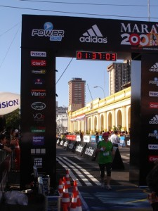
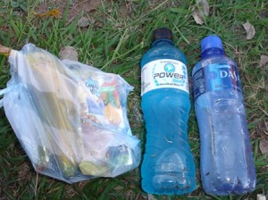
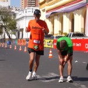
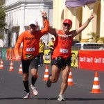
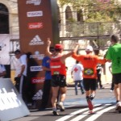
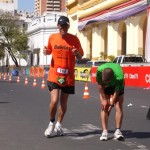
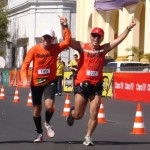
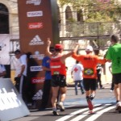
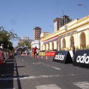
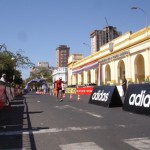

vamo, vamo, vamo…
Posts tagged corrida

Ex- sedentarios na Maratona Internacional de Assunção- Paraguai
86 years
by Ana Amélia
in Ex-sedentário
O Blog fez 2 anos, viva !!!!!!!
E para comemorar este novo ano do blog, eis um relato internacional:
Eu, a Ana Shibata e Claúdio Dundes partimos rumo a Assunção para começar uma nova etapa em nossas vidas de corredores: participamos da nossa primeira corrida internacional e com muito estilo!!!
Acompanhem nossa aventura!
Dia 5 de Agosto:
As 9h20 pegamos o vôo para o Paraguai com a companhia do grupo de corrida Baleias, já mencionado algumas vezes pelo Alecão e pelo Cláudio.
O pessoal √© super simpático e descontra√≠do…fizemos uma farra, sorte que a aeromo√ßa era boazinha…rsrsrs
  
    
  
Chegamos as 11h35 no Aeroporto de Assunção e lá mesmo tiramos fotos e conhecemos o resto do pessoal que nos acompanharia pelos próximos dias.
  
    
 

A organização da corrida disponibilizou uma van para nos levar ao Hotel Chaco, lugar confortável, barato, com funcionários super atenciosos e perto de tudo!
Feito o check-in, deixamos as malas e os casacos (achamos que ia estar frio, mas chegando lá estava 30ºC) e fomos retirar os kits na Expo Maratona que ficava na antiga ferroviária de Assunção. O kit era composto pela camiseta, um boné da Adidas, alguns chaveiros e como parte da inscrição ainda tínhamos um seguro de vida, que após a conferência de dados nos dava uma toalhinha com um elástico para prender no pulso!
Passeamos pela feira, experimentamos o Powerade de Maçã, a famosa CHIPA que é um pão de queijo com um toque de erva doce e deixamos nossa marca lá em Asunción.


  
    
  
Por volta das 18h30 assitimos ao show de uma banda que tocava rock e animou a galera.
  
  
A noite jantamos no El Bolsi, um restaurante super bonitinho, com uma comida muito boa e que apesar de ter dado 1.634.000,00 era super em conta.
  
  
  
  
  
  


Detalhe:
a Myrtha, organizadora da maratona, foi jantar conosco e ganhou um mimo dos Baleias, um pingente de ouro, entregue pelo Wu!!!
Após o jantar maravilhoso, eu estava super cansada e não via a hora de dormir. Seguimos de volta ao Hotel.
 Dia 6 de Agosto:
No sábado, acordamos cedo (Ana Shibata e eu), tomamos caf√© e fomos explorar a cidade. Paramos em um outlet da Adidas e fizemos algumas comprinhas…rsrsrsrs almo√ßamos e nos econtramos com o grupo Baleias para fazer um tour nos pontos hist√≥ricos da cidade.
*** Por um infeliz desastre, perdemos as fotos de sábado, e eu s√≥ tirei essas 2 com a minha máquina üôÅ
Museu da Indepedência e a Catedral Metropolitana de Assunção
   
   
Andamos muuuito e pra ajudar, tava um sol de rachar a “moringa”. Fomos at√© o palácio de Los Lopez e de lá voltamos ao hotel, porque estava imposs√≠vel de andar pela cidade sem água e com o sol forte.
De noite voltamos à ferroviária e participamos do jantar de massas e encerramento da feira, com direito a muita música paraguaia!
Fui logo dormir porque estava com dores nas pernas da andança pela cidade.
Dia 7 de Agosto:
DOMINGO!
Finalmente o dia tão esperado!!!
Nervosismo, ansiedade, felicidade e alegria eram os sentimentos pairando no ar!
Levava uns 7 minutos do hotel at√© a largada. Chegando lá tiramos mais fotos com a turma de cetáceos…kkk e logo fomos para a largada. Quase chorei de emo√ß√£o!
  
  
Ah nem comentei o mais importante: o presidente Fernando Lugo estava presente no ínicio da corrida, dei uma de paparazzi e tirei uma fotinho enquanto ele andava..hehehe

Após o discurso do presidente e a seqüência de fogos, deu-se a largada e partimos rumo aos 10k. No começo o clima estava ameno, os moradores ficavam na calçada torcendo por nós, uma imensidão de pessoas de verde e alguns de laranja, tomavam conta das ruas de Assunção. Em Asunción eles não fecham a rua como aqui no Brasil, lá os guardinhas ficam controlando o fluxo e o pessoal respeita muito os pedestres, tanto é que vi no máximo uns 5 semáforos em toda a cidade.
Uma hora depois da corrida sentia-se um calor muito grande, ao passar por um termômetro eletrônico, marcava 29º. Terminei a prova com 1h34, não fui tão bem como esperava e andei uma grande parte do percurso, devido à falta de treino.
Cheguei a tempo de tirar foto da minha querida mãe atravessando o portal e logo fomos pegar nosso isotônico ( se aqui em São Paulo estamos acostumados com 1, lá eles te davam 3), pegamos uma sacolinha que continha Bananas, maçã ou mexerica, um suco e uma barrinha de cereal muito saborosa. Encontramos um cantinho e sentamos pra respirar! A Drª Ana estava extasiada!!!!
  
Foi uma alegria ter completado a prova e como eu mencionei no dia: senti que tinha cumprido meu dever.


Depois de descansar um pouco, ficamos na arquibancada torcendo por nossos companheiros!


   
    
 


Se Deus quiser ano que vem estaremos de volta a Asunción, mas eu pretendo correr a meia maratona!
Será que consigo? Vou tomar vergonha na cara e começar a treinar para ano que vem fazer bonito na frente dos Baleias que conquistaram 4 troféus!
Espero também que a turma do Ex Sendentários esteja completa dessa vez!
Por último, mas não menos importante, gostaria de agradecer aos Baleias que nos acompanharam nesta maravilhosa viagem!!!
Que venham mais corridas e junto, mais posts!!!
***Especial***
 Abaixo vocês conferem a nossa homenagem ao Henrique, filho do Cláudio, que nos emprestou o Leãozinho que fez sucesso entre os paraguaios e paraguaias!!!
La Fuerza do Leonzito!!!!!!


Beijão üòÄ
Melinha
Baaaaarro
67 years
by Alecão
in Ex-sedentário
Com o pé atolado na lama e de celular na mão resolvi fazer uma vídeo reportagem da aventura deste último sábado.
O Claudião vai fazer um post todo especial completando esta vídeo reportagem. Né Claudião???
CORRIDAS DE MONTANHA – I Etapa-Paranapiacaba
77 years
by Ana Shibata
in Ex-sedentário

Quando fiz a inscrição para a prova em Paranapiacaba o regulamento dizia que o percurso curto seria de 6k.
Semana passada acessei o site da prova,¬†um aparte — mudou de visual, ficou mais bacana e interativo, tem uma entrevista sobre essa prova, modalidade em que farei minha estr√©ia. Depois de ver o video fiquei preocupada; 1- percurso será de 7km?!; 2- mapa do percurso não achei no site e 3- na entrevista dizia que haverá percursos com água.
Vixémmmmmmmmmm, não estou preparada para correr na água, pois não tenho tenis adequado, e o que tenho usado, já comprovei que em montanha não é negócio, não rola, aliás escorrega bastante.
Mandei um e-mail pedindo mapa e confirmação sobre o percurso.
Comentei com Claudio sobre o fato de¬†como ficará o tenis molhado durante a corrida¬†e a resposta não foi agravádel, ele disse “…. vai escorregar!”
Karambola!, pensei, ou melhor, nem pensar em escorregar………… já veio o temor do tornozelo. Tratei de comprar logo um tenis para correr montanha e pisar em água. Resolvido esse entrave.
Ficava faltando a confirmação dos km e mapa do percurso.
Eis alguns dados sobre a prova, que estão no site:
 
1 Рexistem várias passagens por água desde o km2 até o km5.
2- link para o percurso CURTO:  http://corridasdemontanha.com.br/site/?p=400
3- para maior comonidade seu kit para a prova de Paranapiacaba poderá ser retirado na sexta feira (25) na loja KAYLASH CONCEPT STORE das 12h00 até as 19h00 na Av. Sabiá, 202 – Moema – SP.
No sábado(26), dia da corrida, o kit deve ser retirado exclusivamente no ANTIGO MERCADO DE PARANAPIACABA a partir das 10h00 da manhã.
4- Recomendamos que os atletas antecipem a retirada de seu kit na sexta feira ou na parte da manhã do sábado. Caso não tenha recebido o termo de participação é só acessar o site e imprimir. (http://www.minhasinscricoes.com.br/CM_PARANAPIACABA/2011/)
5- Postos de hidratação:
PERCURSO LONGO
QUILOMETRO 2
QUILOMETRO 5
QUILOMENTRO 9
CHEGADA HIDRATAÇÃO SUUM
PERCURSO CURTO
QUILOMETRO 3
QUILOMENTRO 5,5
CHEGADA HIDRATAÇÃO SUUM
  
6- Cronograma do Evento:
Sexta feira:
12h00 inicio da retirada de kit na loja KAYLASH CONCEPT STORE
19h00 termino da entrega de kits da sexta feira
Kailash Concept Store São Paulo
Av. Sabiá, 202 – Moema
São Paulo, SP. Fone (11) 5051 4669Sábado:
10h00 inicio da retirada de kit no ANTIGO MERCADO DE PARANAPIACABA
14h45 Concentração para a largada do percurso longo
15h00 largada percurso longo
15:10 Concentração para a largada do percurso curto no ANTIGO MERCADO
18h00 Premiação
19h00 Encerramento
Ae pessoal, nos veremos lá!!!
 
     
 
Estréia Dupla РBlog e 10K
117 years
by Ana Amélia
in Ex-sedentário
Hoje estou estreando aqui no blog, finalmente \o/ !
E para começar com o pé direito, vim falar da minha estréia nos 10k.
Comecei no mundo das corridas no meio do ano passado, na corrida feminina WRUN- 5km que acontece em Junho. Desde então participei de outras corridas de rua, mas nunca fiz treinos para poder melhorar o desempenho.
No m√™s de Fevereiro vi que as inscri√ß√µes do Circuito das Esta√ß√µes estavam abertas, como sou aficcionada pela Adidas logo me inscrevi, por√©m a prova √© de 10k. Perguntei se o Igor (meu namorado) se arriscaria a correr comigo, ele disse que sim, então pensei: ” Vai ser mais tranquilo, pois ele vai me acompanhar e assim os quil√¥metros ficam menores”.
Desde de Dezembro não corro, e achei que esta corrida me daria √¢nimo para treinar, mas os dias se passaram e nada! Para não dizer que não dei uma corridinha, fui no Elevado Costa e Silva (famoso “Minhocão”) uma semana antes e ainda assim debaixo de um sol de rachar (Vide o post do dia 16 de Mar√ßo da Ana Shibata)
Semana passada, o Igor disse que ia trabalhar no fim de semana e não poderia correr comigo, no máximo acompanhar a largada. Fiquei aflita, hahaha, pensei: “onde √© que eu fui me meter? 10k? Eu sou uma louca mesma”. Quis desistir, mas enfrentei o medo e fui correr.
Cheguei no Pacaembu, onde ocorreria a largada, peguei meu chip e fiquei aguardando a corrida começar. O frio na barriga foi inevitável. Eu olhava para as pessoas e me imaginava a última daquela multidão, atravessando a linha de chegada sozinha.
Oito horas deu-se a largada, fui no trotinho até o povo se espalhar, corri aproximadamente 1k e meio, e o resto foi divido entre trotes, caminhadas e corridinhas.
Quando cheguei no Minhocão estava cansada, aos 4km fiz a volta e fui feliz sabendo que eu aguentaria o resto da corrida numa boa, pois anda tinha muito pique pra continuar.
Por fim, atravessei o portal com 01:31:15, vibrei ainda mais quando vi que o tempo líquido foi de 01:27:53, por mais que sejam só 3 minutos de diferença, pra mim é ótimo, pois faço em média 45min./5km, ou seja, mesmo sem correr por 2 meses, eu ainda consigo ir bem nas corridas.
Os 10K me deram medo, mas me fizeram relembrar o motivo pelo qual comecei a correr, a satisfação de estar ouvindo sua música favorita e correr de todos os problemas que te perseguem, o bem estar e depois de tudo chegar em casa com a sensação de missão comprida, isso não tem preço e é por isso que gosto.
Agora a empolagação é tanta que estou planejando o meu treino de amanhã no e levado, pois sábado a Corrida de Paranapiacaba nos aguarda!


Ana Am√©lia üòÄ
Mãe, olha eu!
47 years
by Alecão
in Ex-sedentário
Na Meia Maratona Internacional de São Paulo de 2011, teve a estréia de mais uma ex-sedentária. Desta vez foi minha mãe que estreou. Ela já é uma caminhante, que poucos conseguem acompanha-la, por causa da passada rápida sem trotar. E queria participar de uma caminhada em corrida e faltava eu fazer a minha parte.


Mogi, Mogi, a terra do caqui…
77 years
by Alecão
in Ex-sedentário
Demorei mas finalmente eu vou fazer o post sobre a corrida de Mogi das Cruzes.
Moro em Santo André e para chegar em Suzano (para encontrar o Luciano) levei mais de 1 hora e para ajudar o Google Maps me enganou. Na sequência, eu e o Luciano partirmos para Mogi das Cruzes, cidade vizinha de Suzano, chegamos lá era antes das 8, a largada era apenas as 8:30. E o sol já estava BRILHANDO.

Encontramos por lá o Edson, que manda muito bem na corrida e estava junto com a sua assessoria.


Meus tempos (paces):
- Km 1 – 6:23 – Come√ßamos rápido, principalmente por causa do tumulto da largada, pois logo na largada¬†voltávamos e corremos em volta do Mogi Shopping, “conhecendo o estacionamento”. Logo sa√≠mos do estacionamento e cruzamos uma linha f√©rrea, muita curva, iamos pela cal√ßada, pelo meio fio…
- Km 2 Р7:03 РRítimo já aceitável para mim. E estávamos em subida.
- Km 3 – 7:27 – Um pouquinho de descida.
- Km 4 Р8:05 РUma outra subidinha. E o sol começa a esquentar o coco. Tava aquele sol ardido. O que salvava era a sombra do muro. Logo viramos a direita e começa uma descida um pouco antes de chegar no 5. Tentando recuperar o rítimo.
- Km 5 – 7:36 – A descida ajudou a recuperar o tempo. Viramos para direita de novo.


- Km 6 – 8:40 – o sol estava nas costas, e a água não mais resfriava meu corpo. Os passos foram ficando pesados e eu falei para o Luciano. “Vai embora”. Ele esta em um r√≠timo bom e eu não queria atrapalhar. Passei a caminhar rápido. Não tinha sombra, não dava para fugir do calor.
- Km 7 Р 8:54 РAlém do calor, começa uma subida meio chata, depois conversando com o Luciano, ele me disse que caminhou apenas nesta subida.
- Km 8 Р 8:14 РNo final da subida, começou a aparecer sombras, minha salvação. Alternava corrida com caminhada, até que um pouco antes da chegada, uma descida, volto a correr, encontro o Edson pouco antes da chegada, dando o maior incentivo.
Terminei a prova com o tempo oficial de 01:02:25 na 776º posição geral e 129º na minha faixa etária.


Para fechar com chave de ouro, tiramos fotos com os “s√≥zias”:


Achando que eu tinha dado tudo nesta corrida, o cansa√ßo maior estava por vir. Levei o Luciano para a casa dele e depois viajei de volta para Santo Andr√©, minha mulher me esperava para uma festinha a tarde, tomei um banho super rápido e fomos. Voltando para casa quase as 8 da noite. O Maur√≠cio passa mal, vomita, uma, duas, tr√™s… fomos para o hospital. Voltei de lá as 23:00 e a Andrea ficou por lá com ele. E fiquei acordado em casa com a Ol√≠via esperando a Andrea me ligar. As 3 da manhã a Ol√≠via vomitou. Corri com ela para o hospital e, com a Andrea, trocamos de filho, voltei para casa com o Maur√≠cio e deixei a Ol√≠via e Andrea no hospital. Dormi as 4 da manhã, porque não tinha mais condi√ß√µes, era zumbi em pessoa, 23 horas acordado com direito a uma corrida de 8K. 8 horas a Andrea me liga para buscar ela. 4 horas de sono me ajudaram muito. Fui dormir novamente somente a noite. Gra√ßas a Deus as crian√ßas não tiveram reca√≠das e ficaram √≥timas depois das sess√µes de soro.

Na cabeça!
127 years
by Alecão
in Ex-sedentário
Pois então, na segunda feira, terminei o post dizendo: Vamo, vamo, vamo… Alecão 1h20m na cabeça!
Então… eu consegui fazer a corrida Carrefour Viver 10K em 1h19m30s, como diria a Mo√ßa: uhuuuuuuu!
Tudo começou com o relógio despertando a 5 da manhã. Depois de uma noite em que eu não dormi nada. Sabe como é a ansiedade?
Ainda por cima, moro em Santo André e trabalho em São Paulo, portanto em casa só para mim era feriado e não estava motorizado e tive que encarar o buzão até o Ibiriapuera.

")
Já disse que odeio acordar cedo? Acho que ainda não. Pois é. ODEIO! Mas pela corrida vale o sacrifício. O trajeto de buzão e depois metrô. Desci na Ana Rosa. E encarei uma caminhada de 2 Km até o Obelisco (estava inspirado).
Cheguei cedo, por volta das 7h, melhor assim. Morro de ansiedade se chego em cima da hora. Sem nada para fazer fiquei na concentração.
")
")
")
")
Perto da hora da largada, resolvi ir mais para trás, afinal meu pace é baixo e não queria ser atropelado.
")
")
")
Na primeira foto anterior, no canto direito inferior, aparece o Ronaldo, na hora da largada eu vi que o conhecia, mas não confio na minha memória, então deixei pra lá. Foi um colega de trabalho (Adriano) que me disse que seu cunhado havia participado da prova e ai lembrei dele, ele é irmão da responsável pelo RH daqui da empresa. hehehe.
Dado a largada, muito emocionante encarar de cara a Rubem Berta, de suas subidas e descidas, que surpreendem os que debutam ela. Como é minha quarta corrida no mesmo percurso, resolvi subir andando 3 ladeiras e assim me poupar para o final. Já no Km 3 retornamos pela Rubem Berta.
")
")
")
Ap√≥s o Km 5, acabou a Rubem Berta, sabia que a partir dali era s√≥ administrar. Quando a surpresa, o “meu her√≥i” apareceu e disse que me acompanharia.
Estávamos na metade da prova. Me senti capaz de terminar inteiro. E ainda com meu herói ao lado. Não podia ser melhor. O Thiago disse que fez 8Km antes de entrar no percurso (sim, ele apenas estava treinando). E decidiu correr até o fim da prova ao meu lado, encarando meu slow-running.
Passamos o Km 6 e contei para o Thiago que no ano anterior, imaginava o pórtico no Km 6 e era bem mais para frente. Este ano corrigiram para mais perto e ainda colocaram 6,1Km na hora do pessoal se inscrever. Pelo jeito muita gente reclamou.
No Km 7, houve distribuição de Gel. Muito bom, recarregou as baterias. Pena que foi fazer efeito apenas depois do Km 9.
")


Já faltando pouco para a chegada (500 metros), consegui recuperar o rítimo e faltando uns 50 metros consegui dar um sprint tímido. Terminando a prova com o tempo de 1 hora 19 minutos e 30 segundos, baixando o meu tempo de 10K em 6 minutos, que antes era de 1h26.
Minha alegria, foi muito grande. Pois sinto que a cada dia estou melhorando e cada prova vou tendo a confirmação disso. A verdade é que senti que poderia mais e que fui muito cauteloso. Mas melhor assim do que quebrar e ter os sonhos atrapalhados.
")
")
Thiago, valeu pela ajuda. Ter companhia é tudo. Espero um dia poder retribuir.
Para voltar para casa, resolvi subir até a Paulista, mais uns 2 a 3 Km de distância. Entre corrida e caminhada, encarei quase 15Km. Mas valeu a pena, tanto que hoje de manhã, tive vontade de correr. Pena que a logística não permite. Treino só amanhã.
Agora é planejar o próximo desafio. E vamo, vamo, vamo vivendo feliz!!!

Sonho realizado
167 years
by Alecão
in Ex-sedentário

Todo ano eu repetia que iria correr a São Silvestre, menos no fim de 2009. Talves pelo fato de já estava correndo e sabia que 15K não é brincadeira.
O Claudio sempre repetia, que a São Silvestre era muvucada e só correria para me acompanhar. Mesmo escutando os problemas relacionados a ela, minha opnião não se alterava, queria porque queria participar.
Mas este ano de 2010, que comecei animado com a corrida do Carrefour, tive problemas em acreditar em mim devido a ter escutado palavras tortas de um m√©dico, isso foi em fevereiro. Esse epis√≥dio me tirou por completo dos treinos. Ensaiei algumas voltas, sem sucesso. At√© me inscrevi no desafio da Mata Atl√¢ntica e fiquei um montão gripado. S√≥ participei por causa da insist√™ncia do Claudio e por causa que sou pão duro e não queria perder o valor da inscri√ß√£o. Valeu a pena ter participado [1] [2], foi a minha esperan√ßa voltando. Nessa √©poca, surgiu o convite para participar como blogueiro da Taeq, foi uma experi√™ncia maluca e ao mesmo tempo providencial… Tudo que podia dar errado deu. Torci o tornozelo (vi estrelas) ao tentar pegar uma moedo no chão do buzão e at√© mesmo o m√©dico do GPA me dizendo que eu deveria desistir da corrida (era s√≥ 5K). Desiludido, e por empurrão da minha irmã. Procurei saber sobre cirurgia de est√¥mago. O m√©dico me disse que bastava querer, meu plano cobria e em 3 meses eu já estaria na mesa de cirurgia. Apavorei. Marquei com um psic√≥loga do grupo do mesmo m√©dico que faria a cirurgia. Foi uma conversa providencial. E a partir dali decidi dar uma chance para mim, “Vou tentar emagrecer”. Foi ai que resolvi desprezar o que o m√©dico do GPA me disse e resolvi correr a maratona de revezamento do Pão de A√ß√∫car e terminei, quase morrendo (hehehe). Esta novela toda merece um post detalhado a parte… Espere, em breve.
Terminado a maratona de revezamento. Resolvi dar um UP em tudo e comecei a levar a s√©rio. Sem cerveja, muita água, pouca comida e muito treino. E decidi… “E neste ano que vou correr a São Silvestre” e a Samsung vai ser um teste”. E assim fui fazer os 10K da Samsung. Que foi na minha opinião o melhor post deste blog.
Toda esta introdução é pra valorizar mais ainda um sonho antigo que era a de correr a São Silvestre e ainda uma coroação para toda a dificuldade emocional por qual passei em 2010.
Pois √© corri, adorei e completei em 2 horas e 13 minutos… Abaixo do que eu esperava. E com o apoio do Claudio, que √© mais que um primo, um irmão para mim.

E da Andrea, minha esposa, que esteve presente na festa (assistindo) e que para mim contou muito. Sem o apoio dela a vitória emocional não seria possível.

Os incentivos vinham de vários lados… Mas teve um que não esperava: Miguel Delgado – CEO dos Baleias me presenteou com um Manto Coral, na qual recebi por Sedex. Não pude acreditar… fiquei muito feliz. Nem conhecia-o pessoalmente, apenas pelos textos em seu site. E ainda ele VOLTOU para me acompanhar e incentivar no meio da Brigadeiro. Me senti importante. Já acumulo meu terceiro √≠dolo (Thiago, Enio e agora o Miguel). VALEU MIGUEL…

Nossa equipe Ex-sedentario esteve representada em peso nessa São Silvestre, sendo que a Andrea assistiu, Thiago superou seu tempo do ano passado (e continua sendo meu her√≥i),¬†Ana assistiu tamb√©m e Claudião… brilhou como mascote dos Baleias (vestido de Esmeralda).

Meus paces foram (por quilômetro):
- 7:20 – Descida, todo santo ajuda, principalmente o Silvestre
- 7:20
- 7:46
- 7:46
- 9:18 РClaudio e Baleias estavam muito rápidos, meu objetivo era terminar a prova e resolvi entrar no meu rítimo
- 8:47
- 9:18
- 9:14
- 9:47
- 9:01 РDiminuiu graças ao reencontro com o Claudio
- 10:15 – Pontilhão entre a Rudge e a Rio Branco, matou!
- 9:25
- 9:56 – Andando a Brigadeiro… sem condi√ß√µes de correr
- 9:36 РO rítmo baixou graças ao Miguel.
- 8:22 – Paulista, Paulista… Com direito a sprint no final.
Veja o v√≠deo que eu, Claudio e Miguel cruzamos a linha de chegada. O Claudio com a Esmeralda (mascote Baleias) trope√ßou no tapete da linha de chegada… Mas em nada ofuscou aquele momento. Foi lindo, foi lindo.
A coroação de fato foi receber a medalha São Sivestre/Baleias. Essa sim, depois da prova como deveria ser sempre.

Claudio, Claudião, anima at√© vel√≥rio… Ele deve ter sido o cara mais fotografado… Toda crian√ßa gritava: “Olha o peixinho” e ele corria at√© a crian√ßa, ficava do lado e os pais tiravam uma foto. Isso aconteceu inúmeras vezes… E ri muito com esta situa√ß√£o. E por falar nisso. Era muito divertido ver as pessoas falando: “Olha o Peixe” e o Claudio gritando “√â BALEIA”, ou senão, “Olha o Nemo” e o Claudio gritava “√â BALEIA, O NEMO TEM LISTRAS”. A que eu mais ri foi “Olha um Santista” e o Claudio “ESSA BALEIA √â CORINTIANA”. Me perdi do Claudio no Km 5 mas ele apareceu no Km 9 e me acompanhou at√© o fim… Foi sensacional ter ele do meu lado nessa minha vit√≥ria pessoal.


Obrigado a todo mundo que me incentivou e me incentiva. A alegria que eu senti nesse dia esta gravada e fixada. Quero viver mais e mais estes momentos. Num balanço cheguei a seguinte conclusão:
2010 foi 10! e 2011 vai ser 11!
E a festa continua nos outros blogs baleias, valeu galera pela super amizade, confira:
Um ano da primeira prova de Alex e Claudio (comemorando em grande estilo)
287 years
by Alecão
in Ex-sedentário
Este é um post elaborado a quatro mãos (do Alex e do Claudio).

Faz 1 ano em que eu (Alex) aceitei participar da minha primeira corrida, na época a idéia partiu de mim e o Claudio pirou ao escutar a idéia. Naquela corrida corremos lado-a-lado e com certeza sem ele não teria completado a prova.
Desta vez a coisa foi diferente. Claudião se preparou para encarar a maratona de Curitiba e eu quis fazer um Deja-vu correndo novamente a Samsung 10K e desta vez sozinho.
Falando nisso, todas as corridas que eu participei, tive companhia e nessa em particular eu corri sozinho… Portanto, tive que contar muito com a for√ßa de vontade.
Escrevendo esta introdu√ß√£o fiquei imaginando como iria fazer um texto a quatro mãos, sendo que não estamos juntos. Então eu imaginei… Escrevo minha parte e depois o Claudio acrescenta a dele. E como fazer isso? A resposta √© colocando os horários e depois intercalando…

Deus! Escrever agora, emocionado, fica mais complicado.
A data realmente pedia uma comemoração especial. Afinal, um ano da primeira prova oficial depois de nossa resolução de parar de reclamar da má sorte/saúde e literalmente corrermos para o abraço de uma vida feliz!
Partamos então para a parte Parananense da comemoração, porque eu não comemorei sozinho em Curitiba, nosso idolo do Blog, o Thiago, esteve comigo na aventura. E que aventura:
21:45 (Claudio) РSábado 20.11. -Thiago e eu estamos na Rodoviária do Tiete, aguardando o horário de partida do ônibus que nos conduziria até Curitiba.

02:30 (Alex) РAcordei, sem sono, maldita ansiedade, tentei dormir novamente sem condições. Mesmo assim fiquei deitado na cama até o relógio tocá-se.
04:30 (Claudio) РDomingo 21.11 Р Thiago e eu somos acordados pela luz do ônibus, que anunciava a chegada à rodoviária de Curitiba.  Uma troca de roupas no banheiro da rodoviária e um café pré-corrida com torrada (seca) e gatorade.
05:00 (Alex) – Sa√≠ da cama e procurando roupa, vesti dei tchau para Andrea e sai pensando… Por que fui aceitar essa id√©ia???
05:00 (Claudio) РComo ainda faltavam duas horas para a corrida, decidimos caminhar até a largada. Afinal, só encontraríamos o Paulo Motta com os nossos kits ás 06:15. Mas devido a informações erradas acabamos indo na direção contrária. Eram 05:50 quando decidimos tomar um ônibus ou táxi para a largada, mas ônibus não passavam e os táxis que passavam, não paravam. Bateu-me desespero, mas finalmente um táxi parou e em 07 minutos nos deixou na arena da corrida.
06:10 (Alex) – Cheguei na Assembl√©ia legislativa, achei uma vaguinha do lado… Ufa, era minha maior preocupa√ß√£o. Já estava trocado. S√≥ faltava esperar.
06:35 (Claudio) РO Paulo Motta chega com os nossos kits. No mesmo momento também aparece a Dani Dato e o seu anônimo esposo, Vinicius (que também correu sua primeira prova longa) e Enio.

07:00 (Claudio) – Dada a largada Thiago, Paulo e eu ainda ainda estávamos procurando o acesso para a pista. E uma supresa. O Enio disse que correria comigo, que em razão de um problema ainda não curado na lombar correria apenas 10kms (disse isso para me enganar) do meu lado.
Apesar da sensacional e emocionante companhia do Enio foi bastante estranho correr os primeiros 5km em último lugar. Thiago e Paulo seguiam um pouco a frente.
07:30 (Alex) – E como esperei… andei para um lado, andei para outro. Fiquei procurando os conhecidos e nada. Desisti e fui para a largada. O meu setor (preto) era exatamente do lado do Trio el√©trico. No qual teve aquecimento, foi bem legal isso.


8:00 (Alex) – Largada!, come√ßou o anda-anda e liguei para o Claudio… Ele já estava correndo desde as 7:00. Desejei boa¬†sorte e ele a mim. Senti ali a presen√ßa dele e sabia que poderia encarar o desafio. Vamo embora! O in√≠cio √© pouco tumultuado comparado com o ano passado (bem pior). Encarar essa torcida do Cruzeiro não √© fácil (n√© Fábio? üôÇ ). Falando nisso o Fábio comentou do tumulto do in√≠cio… Saiba que no ano passado a coisa foi bem pior, porque os camisas brancas (caminhantes) estavam misturados a torcida do cruzeiro. Comecei bem com o r√≠timo de 7:30 por Km (primeiro e segundo quil√¥metros).


8:00 (Claudio) –¬†O telefone toca e era o Alecão dizendo que estava come√ßando a correr. Naquele momento já fiquei emocionado, era, enfim, o come√ßo da nossa comemora√ß√£o. Corrida vai, corrida segue, s√≥ encaixei¬†o passo e a respira√ß√£o por volta do km 11, quando já tinhamos passado por postos de hidrata√ß√£o bem bacanas.


8:30 (Alex) – Já estou no quarto quil√¥metro, passando do lado do Obelisco. A sombrinha das árvores acabaram (na¬†República¬†do L√≠bano). Fiquei com saudade da sombra… e já avistei a Rubem Berta… Lembrei que no ano passado, foi bem neste ponto que tive hiper-ventila√ß√£o. No ano passado o circuito era diferente, o Obelisco já era no quinto quil√¥metro. Bateu a lembran√ßa e tamb√©m já imaginei… Tem mais subida pelo caminho (era 1 Km a mais na Rubem Berta). Decidi que o objetivo era terminar e diminu√≠ o passo. Fiz o terceiro Km em 8:30 e o quarto a 9:00… Come√ßaram as subidas da Rubem Berta… socorro. “Anda Alex”, “Anda Alex” era a voz que vinha de dentro. Comecei a caminhar rápido. E não era s√≥ eu. Tinha muita gente partindo para a mesma id√©ia. Corria na descida e NOOOOSSA uma subida interminável e caminhei novamente. O quinto e o sexto quil√¥metro foram feitos a 10:00 cada.
9:00 (Alex) – S√©timo quil√¥metro, lembrei que no ano passado eu esbocei uma rea√ß√£o aqui. Encarei que iria recuperar o tempo das caminhadas… meta fixa na cabe√ßa… “Quero terminar em 1 hora e meia”. E fui correndo quando dava. Nessa hora vi que não era um dos últimos e comecei a ficar feliz… Não sou tão lerdo assim.


O S√©timo ainda tinha subidas e fiz com 9:00 e o oitavo e nono a 8:30 e apenas pensava… Vou conseguir, vou conseguir…
9:30 (Alex) – Estou no d√©cimo quil√¥metro e apareceram placas com “Faltam 800m”, “Faltam 600m”, “Faltam 400m” uma alegria geral foi tomando conta, sombra de árvores voltaram… Tirei o bon√©:
 Nessa hora, avistei um senhor já de idade dando um sprint e virando a curva. Não me aguentei e disparei, quase atropelei 3 mulheres que corriam lado a lado e fui a busca do senhor. Uhuuuuuu. Animal… (veja o v√≠deo da chegada)
Nessa hora, avistei um senhor já de idade dando um sprint e virando a curva. Não me aguentei e disparei, quase atropelei 3 mulheres que corriam lado a lado e fui a busca do senhor. Uhuuuuuu. Animal… (veja o v√≠deo da chegada)
Liguei para o Claudio… Gritei: “Claudio fiz em uma hora e vinte seis…” E escutei a vibra√ß√£o dele do outro lado da linha… Ele vibrava, “voc√™ foi muito bem…” e emendou “Estou no Km 21. A corrida pra mim come√ßa agora”. Fiquei muito emocionado nesse momento. Obrigadão Claudio, por estar comigo e vibrar comigo mesmo quando eu estou correndo sozinho. O tempo oficial marcou os mesmos 1:26:00 (arredondando).


Na sequ√™ncia liguei para a Mo√ßa (Andrea) que vibrou muito junto com as crian√ßas. Se no ano passado a frase que repeti no post foi “Consegui, Consegui, Consegui”…. A deste ano √© “Perseverei, Perseverei, Perseverei” e Vamo, vamo, vamo… Claudião continua agora…
9:30 (Claudio) –¬†O¬†telefone toca novamente. Era o¬†Alecão¬†ainda ofegante dizendo que havia terminado a prova em 01h26min. Fui tomado por uma¬†emo√ß√£o tão grande que eu berrava¬†muito alto na rua.¬†Comecei a¬†chorar e o Enio, sempre comigo,¬†¬†lembrou-me de ¬†que ainda¬†tinhamos 21 kms pela frente.¬†Foi inevitável¬†não acelerar naquela hora. A primeira parte¬†da prova foi muito linda (sem cansa√ßo¬†a paisagem fica mais agradável)¬†Havia árvores cujas flores pareciam girass√≥is.

10:30 (Claudio) РO sol aparece com todo seu explendor. No km 28, aproximadamente uma caminhada rápida na subida, seguida de um trote contínuo até o km 31, a partir de onde as caminhadas ficaram recorrentes, mas firmes. Passamos pelo Thiago já voltando embalado e logo em seguida pelo Paulo Motta. Num dado momento eu estou caminhando sem ritmo e decido bater palmas para ditar o ritmo da caminhada, o que ajudou bastante porque a caminhada virava corrida muitas vezes.

A esta altura eu já sabia que atingiria meu objetivo de completar a maratona em bom estado físico e dentro do tempo regumentar. Já fazia alguma festa, mas sem dispensar nenhuma ajuda oferecida pela estrutura da prova.


Depois do km 36 o Enio tentava arrancar de mim um corredor forte, mas única coisa forte que encontrava era caminhada (menos mal). E, de quando em vez, um trote.

Caminhando e trotando eu cometi uma heresia em maratona. Parei na placa de 40km, quando todos ganham força e aceleram, mas acheia-a tão linda. Afinal, eu nunca havia sequer visto uma placa de 4okm, assim, tão  de perto.


Depois dessa placa eu queria chegar logo, mas as penas não respondiam ao comando da ansiedade, o que resultada em tiros de 25 metros seguidas de caminhadas de 200. O Enio me apontava o pórtico da chegada, mas ele estava muito longe e no alto de uma subida. O Paulo Motta já tinha voltado para me rebocar e seguimos os três, mas sprint mesmo somente nos ultimos 100 metros. Eu ainda consegui fazer uma graça. Parei diante do tapete e pulei em cada faixa (três) com os pés juntos.
Eu havia completado a prova. E no maravilhoso tempo de 05H21Min01Seg.
O Paulo Motta, que no mês de agosto me presenteou com a inscrição da corrida e todo incentivo de três meses, deu-me um caloroso abraço. Nessa hora eu me emocionei. Delícia que eu desejava experimentar há muito tempo. E eu gostei disso. Eu fiz uma loucura planejada e em, apartado, farei um post especial para agradecer a todos que me incentivaram e que me foram decisivos na fase destinada a preparar meu corpo para suportar a brincadeira.
O Enio foi sensacional. Sacrificou a corrida dele para estar comigo durante todo o tempo, incentivando-me sempre e vibrando comigo. Jamais esquecerei isto meu amigo. Devo-lhe um rim.
E o Thiago? Este terminnou voando e o perdemos. Depois que o encontramos que ele esclareceu que após um descanso foi nos esperar na chegada, quando já havíamos passado. Liguei para a Mari e, lógico, para o Alecão, o fecho de nossa especial comemoração.
Mas a maratona da viagem ainda não havia terminado. Conheci o veloz Baleias Tinil, que me recebeu de braços e coração abertos. Um verdadeira festa Baleias.

Quando encontramos o Thiago,  vimos novamente Tinil, desta vez acompanhado do divertidíssimo Julio Cordeiro. E já rolou ali mesmo uma comemoração com Gatorade Espumante, como chamou o Julio, em seu blog.
Não posso deixar de comentar que Thiago e eu tomamos banho no chuveiro fornecido pela organização da prova. Num container.  Um monte de magricelas pelados.  Senti-me uma panceta no meio do charque. Inusitado, para dizer o mínimo. Mas aquela altura TUDO ERA FESTA.
O Paulo até adiou a ida dele ao amigo que o hospedava, para ficar para o almoço/cervejada, que contou com a presença também do Ésio Cursino.

Thiago e eu saimos as pressas para a rodoviária. Eu estava muito feliz e ligeiramente bêbado, o que tornou tudo mais divertido. Assim que o ônibus partiu fui ao banheiro e nas ultimas 6 poltronas haviam maratonistas (legítimos). Fiquei ainda quase duas horas em pé no corredor do ônibus proseando. A sensação era de que o ônibus se deslocava para frente e girando ao mesmo tempo no próprio eixo.
A nossa comemoração de um ano foi sensacional. Justo durante o período em que me dediquei aos treinos longos e a dieta (tive de perder 8 quilos que estavam atrapalhando muito), o Alecão também se superou, E MUITO, vencendo barreiras quase intransponíveis para fazer bonito na equipe Taeq durante a Maratona de Revezamento Pão de Açucar. Emagreceu 12 quilos e fez uma lindeza de prova comemorativa. Diminuiu vinte minutos daquela prova e com um fantástico sprint.
O Alex √© o meu her√≥i e parceiro de toda uma exist√™ncia.¬†√â tamb√©m o Her√≥i deste blog, porque segue feliz e aceitando suas limita√ß√µes mesmo tendo no encal√ßo o mala do Claudião. Mas sempre contando tamb√©m com Thiago, nosso √≠dolo, incentivador e parceiro at√© nas roubadas mais incr√≠veis, como este bate-e-volta para Curitiba. Valeu Thiagão!!!! Cad√™ o Guilherme Maio? Gui, eu tamb√©m tenho meu “mestre Thiago”.
(Alex) E tudo começou assim:

.jpg "DSC01708 (1024x576)")
.jpg "DSC01914 (1024x576)")
.jpg "DSC01929 (1024x576)")


{kind=link}
{kind=link}
{kind=link}
{kind=link}
{kind=link}
{kind=link}
{kind=link}
{kind=link}
{kind=link}
{kind=link}
{kind=link}
√öltimos comentários